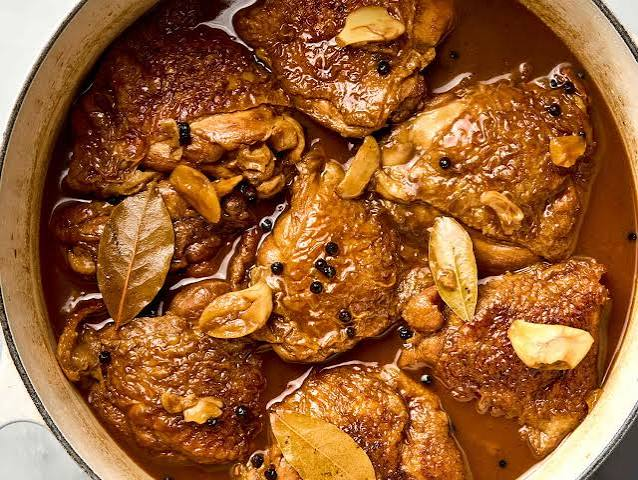

Chicken Adobo

Description
Chicken adobo is a popular Filipino dish known for its savory,
slightly tangy, and rich flavor.
The chicken is slowly cooked in a mixture of soy sauce,
vinegar, garlic, and seasonings until it becomes tender
and absorbs the flavorful sauce.
Ingredients
- Chicken pieces
- Soy sauce
- Vinegar
- Garlic
- Bay leaves
- Whole black peppercorns
- Water
- Cooking oil
Steps
- Combine the chicken with soy sauce and garlic.
- Allow the chicken to absorb the marinade.
- Heat oil in a pot and lightly cook the chicken.
- Add the marinade, vinegar, bay leaves, peppercorns, and water.
- Bring the mixture to a boil, then lower the heat.
- Simmer until the chicken is tender and the sauce has reduced.
- Serve the chicken adobo with rice.
Home